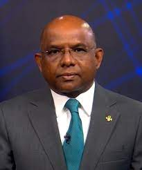

GENERAL ASSEMBLY
The United Nations General Assembly is the principal organ of the United Nations. All Member States are represented on it, each voting on important issues, such as peace and security, the entry of new Members, and budgetary issues. It is one of the six main organs of the United Nations and the only one in which all member countries have equal representation.

PRESIDENT
In 1994, Abdulla Shahid was appointed by President Gayoom as a member of the Constituent Assembly and in 1995 as a resulting member of parliament. In 2000 he was elected to the Majlis by the Maldivian Democratic Party for the first time and represented the constituency of Vaavu Atoll. In 2005 he also became Minister of State in the Ministry of Foreign Affairs and, following the resignation of Ahmed Shaheed on August 21, 2007, he was appointed the new Minister of Foreign Affairs by President Maumoon Abdul Gayoom on August 23, 2007.
PRIORITY
Elect the non-permanent members of the Security Council, the members of the Economic and Social Council and the members of the Trusteeship Council who may be elected; elect, with the Security Council, the magistrates of the International Court of Justice and, on the recommendation of the Security Council, appoint the Secretary General.
accordance with the resolution Union Pro Paz, adopted by the General Assembly in November 1950, the Assembly can take measures if the Security Council, due to lack of unanimity among its permanent members, does not take them in a case in which there appears to be a threat. to peace, breach of the peace or act of aggression.
MEMBERS
There's 193 members in the General Assembly. Every country in the world but Santa Sede and Palestine.
BODIES IN THE GENERAL ASSEMBLY
UNICEF
General Assembly established UNICEF to further institutionalize post-war relief work. In 1950, its mandate was extended to address the long-term needs of children and women, particularly in developing countries. In 1953, the organization became a permanent part of the United Nations System, and its name was subsequently changed to its current form, though it retains the original acronym. UNICEF relies entirely on voluntary contributions from governments and private donors. The board is made up of government representatives elected by the United Nations Economic and Social Council, usually for three-year terms. UNICEF's programs emphasize developing community-level services to promote the health and well-being of children. Most of its work is in the field, with a network that includes 150 country offices, headquarters and other facilities, and 34 «national committees» that carry out its mission through programs developed with host governments.
UNICEF relies on country offices to help carry out its work through a unique program of cooperation developed with the host government. Overall management and administration of the organization take place at its headquarters in New York City. Its work is coordinated by the bureau, comprising the president and four vice-presidents, each officer representing one of the five regional groups.
UNODC
UNODC aims to assist Member States in building their capacity, including through criminal justice reforms as appropriate, to respect the rule of law, as well as protect and ensure legal rights that individuals and groups enjoy under domestic and international law. This includes programming based on the principles of equality and non-discrimination, participation and inclusion, and accountability and the rule of law. By drawing on its expertise in crime prevention and criminal justice as well as in drug prevention, treatment and care, UNODC contributes to enhancing the enjoyment of human rights and addresses challenging human rights situations through risk mitigation.
UNEP
Since its inception in 1972, the United Nations Environment Programme (UNEP) has been the global authority that sets the environmental agenda, promotes the coherent implementation of the environmental dimension of sustainable development within the United Nations system and serves as an authoritative advocate for the global environment.
UNEP’s mission is to provide leadership and encourage partnership in caring for the environment by inspiring, informing, and enabling nations and peoples to improve their quality of life without compromising that of future generations.
UNEP supports Member States to ensure that environmental sustainability is reflected in development and investment planning and provides countries with the necessary tools and technologies to protect and restore the environment.
UNCTAD
The United Nations Conference on Trade and Development (UNCTAD) was established in 1964 as an intergovernmental organization intended to promote the interests of developing states in world trade. UNCTAD is the part of the United Nations Secretariat dealing with trade, investment, and development issues. The organization`s goals are to: "maximize the trade, investment and development opportunities of developing countries and assist them in their efforts to integrate into the world economy on an equitable basis". The primary objective of UNCTAD is to formulate policies relating to all aspects of development including trade, aid, transport, finance and technology. It was argued in UNCTAD that to promote exports of manufactured goods from developing countries, it would be necessary to offer special tariff concessions to such exports. The United Nations Conference on Trade and Development was established to provide a forum where the developing countries could discuss the problems relating to their economic development. It is a member of the United Nations Development Group. There are non-governmental organizations participating in the activities of UNCTAD.
UNFPA
UNFPA is the United Nations sexual and reproductive health agency. The mission of UNFPA is to deliver a world where every pregnancy is wanted, every childbirth is safe and every young person's potential is fulfilled.
UNFPA works along with other United Nations agencies to raise awareness of the support and resources needed to achieve its mission to promote the rights and health of women and young people. Contributions from governments and the private sector to UNFPA in 2016 in total raised $848 million. The amount includes $353 million to the organization's resources and $495 million earmarked for specific programs and initiatives.
UNDP
The United Nations Development Programme is a United Nations organization tasked with helping countries eliminate poverty and achieve sustainable economic growth and human development. Headquartered in New York City, it is the largest UN development aid agency, with offices in 170 countries.It administers projects to attract investment, technical training, and technological development, and provides experts to help build legal and political institutions and expand the private sector. Assistance is provided at the request of national governments, and UNDP personnel frequently coordinate with local officials, nongovernmental organizations, and other international agencies.
UNCDF
The United Nations Capital Development Fund (UNCDF) The UN Capital Development Fund makes public and private finance work for the poor in the world's 46 least developed countries (LDCs).
UNV
The United Nations Volunteers programme's objective is peace and development through volunteerism worldwide. They work with partners to integrate qualified, highly motivated and well supported UN Volunteers into development programming and promote the value and global recognition of volunteerism. UNV is administered by the United Nations Development Programme (UNDP).
UNHCR
UNHCR was established on 14 December 1950 and succeeded the earlier United Nations Relief and Rehabilitation Administration. The agency is mandated to lead and co-ordinate international action to protect refugees (other than Palestinian refugees, who are assisted by UNRWA) and resolve refugee problems worldwide. Its primary purpose is to safeguard the rights and well-being of refugees.
UNRWA
The United Nations Relief and Works Agency for Palestine Refugees is a UN agency that supports the relief and human development of Palestinian refugees. UNRWA's mandate encompasses Palestinians displaced by the 1948 Palestine War and subsequent conflicts, as well as their descendants. As of 2019, more than 5.6 million Palestinians are registered with UNRWA as refugees. UNRWA was established in 1949 by the UN General Assembly to provide relief to all refugees resulting from the 1948 conflict. It also provided relief to Jewish and Arab Palestine refugees inside the State of Israel following the 1948 conflict until the Israeli government took over responsibility for them in 1952.
UN-WOMEN
UN Women is the UN organization dedicated to gender equality and the empowerment of women. A global champion for women and girls, UN Women was established to accelerate progress on meeting their needs worldwide.
UN-WOMEN cares about the stereotypes in our world and it dedicates specifically to gender equality. Its mission is to make a world a fair place for both genders
WFP
The World Food Programme is the food-assistance organism of the United Nations. it was founded in 1961, and it is headquartered in Rome and has offices in 80 countries of the world. The World Food Program is an executive member of the United Nations Development Group, that aims to fulfil the 17 Sustainable Development Goals , with a priority on achieving zero hunger by 2030.
UNICRI
United Nations Interregional Crime and Justice Research Institute was founded in 1968 to assist the international community in formulating improved policies in the field of crime prevention and criminal justice. Its work currently focuses on Goal 16 of the 2030 Agenda for Sustainable Development, that is centred on promoting peaceful, and inclusive societies, free from crime and violence.
UN-HABITAT
The United Nations Human Settlements Programme is the United Nations programme for human settlements. UN-Habitat maintains its headquarters at the United Nations Office at Nairobi, Kenya. It is an organism of the United Nations Development Group.
The mandate of UN-Habitat is further derived from other internationally agreed development goals, including those contained in the United Nations Millennium Declaration (Assembly resolution 55/2), in particular the target on achieving a significant improvement in the lives of at least 100 million slum-dwellers by 2020; and the target on water and sanitation of the Plan of Implementation of the World Summit on Sustainable Development, which seeks to halve, by 2015, the proportion of people without sustainable access to safe drinking water and basic sanitation